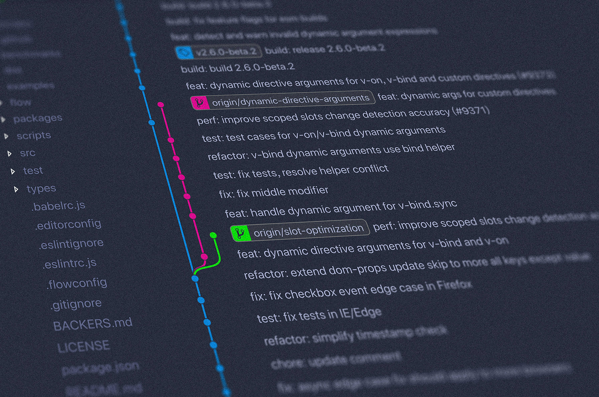

Changelog
Current
Historic
Date
Date
Filter
Reset
Date
Change
Page
November 3, 2025
Update to new AY
Multiple
January 18, 2024
Corrected bi-gram norm by unigram counts in some cells (most notably </s>).
cmry.notion.site/Cla…83b44d
January 18, 2024
Corrected softmax prediction index to match vector.
cmry.notion.site/Dee…b66b50
January 16, 2024
Finalized exam details and example questions. See announcement for details.
cmry.notion.site/Ass…2e5578
January 12, 2024
The late policy has been updated not to include the weekend.
cmry.notion.site/Ass…d9875b
November 23, 2023
Added pointer to lecture recording of last year where Edit Distance was discussed in more detail.
cmry.notion.site/Col…f3e178
November 23, 2023
Added pointer to lecture recording of last year where Decision Trees and Naive Bayes were covered in more detail.
cmry.notion.site/Cla…6d9830
November 23, 2023
Updated Week 2 slides so WordPiece incorporates shown word frequencies.
cmry.notion.site/Col…?pvs=4
November 22, 2023
Added a link to the page with more Interim Assignment information (was only on Canvas before).
cmry.notion.site/Ass…198784
November 22, 2023
Added example / starting papers to interim assignment by request.
November 21, 2023
Fixed error in Task 3 of Week 2.
cmry.notion.site/Col…3c3e86
November 21, 2023
Added slides of week 2 (top of page).
cmry.notion.site/Col…?pvs=4
November 16, 2023
Added slides of week 1 (top of page).
cmry.notion.site/Int…?pvs=4
November 15, 2023
Removed mention of notebooks in lab session 1; content is only provided through this page.
cmry.notion.site/Lab…?pvs=4
November 15, 2023
Fixed Atlas rooms to -1.822 and -1.715.
cmry.notion.site/Cla…?pvs=4
November 13, 2023
Added Introduction and Course information videos & week 1 slides
cmry.notion.site/Int…?pvs=4
November 13, 2023
Updated lecture recording availability to be on videocollege.tue.nl rather than Panopto.
cmry.notion.site/Cla…6f47d3
November 10, 2023
Added warm-up questions.
All lecture pages